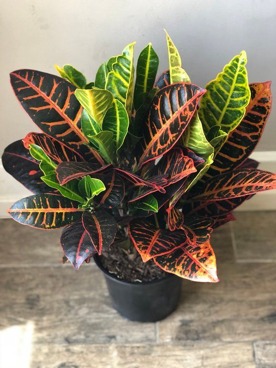
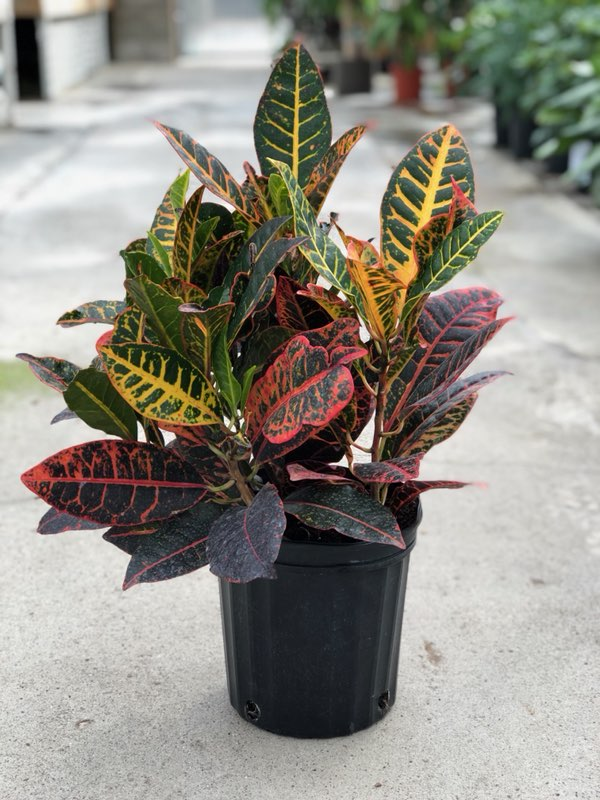

The croton is an easy-to-grow houseplant known for its variegated foliage covered in green, scarlet, orange, and yellow splotches. Here’s how to care for a croton in your home or garden. Croton,  also called “garden croton,” are native to the tropical forests of southeast Asia and Oceania. In the wild, they grow as large shrubs, reaching up to 10 feet tall (in the home or garden, they stay a lot smaller).
Note: All parts of this plant are poisonous—especially the seeds—so it is not recommended for use in homes with curious pets or children. When damaged, croton produce a milky sap that can be irritating to the skin, too.
Planting Croton
- When choosing a container for your croton, keep in mind that the plant will grow upright, which eventually may cause it to become top heavy. Pick a container that won’t easily tip over when the croton gets larger.
- Use a well-draining potting mix. Croton like to be kept moist, but not wet.
- In areas with warm, humid summers, croton can be grown outdoors as a unique and colorful landscape plant. They work well in tropical-themed containers or alongside annuals in the ground. When temperatures drop to around 50°F (10°C), croton will need to be taken indoors.
How to Care for Croton
Place croton in a sunny location such as an eastern, southern, or western window. If a croton is getting too little light, its newer leaves will be less colorful. Keep the soil evenly moist, but let it dry out between waterings. If humidity is low in your home, mist around the leaves with water once a week or keep a tray of wet gravel near the plant. Croton leaves are dust magnets.  Gently wipe the leaves with a moist cloth twice a month to keep them clean and dust-free. Fertilize the plant in spring and summer. New croton plants can be started with 4 to 6 inch long stem cuttings. Remove the bottom leaves and place the cutting in a glass of water. After roots have formed, plant in a small pot. Repot the plant in the spring if it has grown too large for its current pot.
Can I have croton plants with cats?
The croton plant can have a similar effect on cats that it does on humans. When ingested, croton sap may make your cat sick, and because its leaves are big and full of beautiful color, they can be very alluring to cats. If you do have both a croton plant and a cat, display your plant in an area that your cat cannot easily access. If your cat, or other pet, is lethargic and vomiting and you suspect that they may have ingested croton plant, take him/her to the veterinarian.
How often should croton plants be watered?
Again, the croton plant originated in a tropical environment, so it favors a warm, humid environment. The soil in which the croton is planted should remain moist but not constantly wet during spring and summer when the plant is growing. Feel the soil and if it is dry to the touch, it may be time for watering. In a dry environment, the croton may require misting to maintain healthy leaf growth. Much like with other plants, watering croton plants can be a delicate science. The croton plant requires frequent watering, but be sure not to over-water. Too much water can cause root rot, but too little water can dry the humidity-loving plant out. You can use new croton foliage as an indicator of water needs, as it will begin to wilt when thirsty.